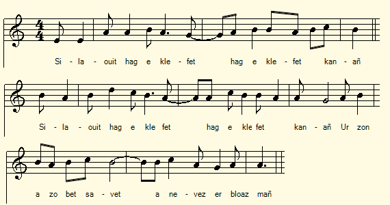
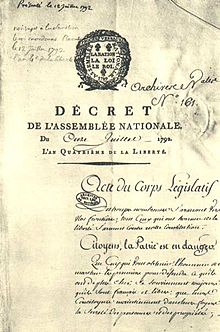

Paotred Gourin
Les gars de Gourin (Levée de 300.000 hommes)
The Gourin Lads (The 300.000-man Levy)
Chant collecté par La Villemarqué dans le 2ème Carnet de Keransquer (p. 34-36).puis par l'Abbé François Cadic (publication en août-sept. 1928)

Mélodie
"La Levée de 300.000 hommes"
Arrangement Christian Souchon (c) 2019
Source: "Paroisse Bretonne de Paris" de l'Abbé François Cadic, août-sept. 1928
|
A propos de la mélodie Le carnet N°2 ne fournit pas d'indication à ce sujet. La mélodie est donnée par l'Abbé Cadic dans la revue "Paroisse Bretonne de Paris". Elle a été collectée avec les paroles par l'abbé Larboulette, curé de Bignan qui avait composé "pendant ses vacances d'étudiant" un recueil de chants collectés à Plouhinec et Kervignac (près de Lorient). La mélodie fut chantée par un vieillard du hameau du Gueldro en Plouhinec, nommé Le Fur, lequel tenait le chant d'un quasi-centenaire qui avait chouanné dans sa jeunesse. A propos du texte L'abbé Cadic suppose à juste titre que le chant provenait de la Montagne Noire, vers Langonnet ou Gourin, "ainsi qu'en témoignent les noms de localités, et il y avait alors dans cette région, beaucoup de bardes guerriers qui aimaient à,célébrer les principaux événements." Le carnet N°2 ne cite pas le nom du chanteur. Mais son texte est plus complet et, bien qu'il ne possède pas les strophes A, B et C, il permet de reconstituer les noms de lieux estropiés dans la version Cadic (le "Calais" qui intriguait tant l'abbé était "Carhaix"...) M. Jean-Yves Thoraval a recueilli le procès-verbal du recrutement pour la levée de 300.000 hommes de la commune de Gourin daté du 7 au 12 mars 1793 et des documents annexes qui éclairent fort utilement notre propos. |
About the tune The notebook N ° 2 does not give any indication about the tune. The melody is published by Rev. Cadic in the review "Breton Parish in Paris". Tune and lyrics were collected by Rev. Larboulette, vicar of Bignan who had composed "during his student holidays" a collection of songs gathered at Plouhinec and Kervignac (near Lorient). This melody was sung by an old man from Gueldro near Plouhinec, named Le Fur, who had learnt the song from a quasi centenarian who had fought with the Chouans in his young years. About the lyrics Father Cadic rightly supposes that the song came from the "Montagnes Noires", an area between Langonnet and Gourin, "as hinted at by the names of localities quoted, and there were back then in this region, many warrior bards who were pleased to celebrate this glorious past." The notebook N ° 2 does not quote the name of the singer. But the lyrics in this version are more complete and, although it does not have the stanzas A, B and C, it allows to reconstruct the misspelt place names in the Cadic version (where "Calais" which intrigued so much the priest was, in fact, "Carhaix "...) Mr. Jean-Yves Thoraval collected the minutes of recruitment for the levy of 300,000 men in the commune of Gourin dated March 7 to 12, 1793 and additional documents which very usefully shed light on our point. |
Version La Villemarqué
|
BREZHONEG (Stumm KLT) PAOTRED GOURIN Pajenn 34 1. Fala lala/ lalère/ Fala lala lalala (ter) La ha.reré la la ah! Ré ré la la ah' la la ! 2. Silaouit hag e klevfet hag e klevfet kanañ (ter) Ur zon a zo bet savet a-nevez er bloaz-mañ. 3. Pehini zo bet savet gant sperejoù e leizh Balamour da walleurioù a zegouezho e Breizh. 4. Da gentañ e gomañser dre an hanter-kantved, Dre an tasoù ha rolloù pere o-deus añvet, 5. Goude mo-deuz degaset dre an urzh a Roue Da lar e ranker kavout soudarded a-nevez. 6. A barrez Langolen [?] e c'houlenont daouzek, Pevar demeus a Vrezek, hag eizh deuz ar Faouet. 7. Ha pemp a barrez Plorin, c'hwec'h a barrez Pleuvin, Pevar a barrez Motre ha naontek a C'hourin. 8. Pear dimeus paotret Gourin a zo demeus ar ger, Tri anezhe kerourien, un all zo munuzer. 9. Ar pemzek all anhezo, a zo diwar ar maes Eus ar vaillantañ paotred a vager er barrez. 10. C'hentañ eus paotret Gourin a zeuaz da dennet A lavarer anezhan Josef ar Melvezek : Page 35 11. - Arsa paotred va farrez, setu ni digomfort, Tennet em-eus r bilhet du, kouezhet e warnon ar sort. 12. Me garfe kavout unan en-defe ar volontez (madelez) A savfe din an donnañ deus ma glac'har kalet (dristidigezh) 13. Hag eñ deufe da ganañ da gomfort hor speret. Kanaouennoù vo kavet awalc'h er parrez 14. A zavo deoc'h an doare deus ho tristidigezh. - - Ar c'homissour a lare, pa o gwel o tristaat: 15. Tavit, paotred (kaezh), emezan, c'hwi a vevo ervad. Pemp kwenek ho-po bemdé hag e viot bouedet mat. (1) 16. O servijiñ ar Roué c'hwi a vo disoursi... Mes allas! ar Vretoned zo leun a velkoni! 17. O servijiñ ar Roué c'hwi a vo brav gwisket, Bep a gleze en ho kostez, ha bep a dok bordet. 18. - Ne ra forzh gant ar boued mat ha gant ar pemp kwenek Gwell eo ganomp chom er ger ha bezañ ezhommeg ; (1) 19. (1) Gwell eo ganeomp chom (kaout) e Breizh gant tamm bara segal, Eget debriñ bara gwenn, e barzh ar broioù all. [En marge, verticalement, à gauche] 20. Gwell eo ganeomp, un dener, un dener em farrez Evit kaout hoch aour melen, mar ma red mont ermaes. 21. Gwell vez achanon bout gwisket e lien a zichenn Evit glebiañ dilhat ker gant daelou deus va fenn. *** 22. Paotret Gourin a laré, pa yent demeus ar ger : - Kenavo, Gwerchez Vari, ha c'hwi Aotrou St Per, 23. Kenavo d'hor bannieloù neus douget n'ho iliz Poan eo deomp siwazh monet, ne zeomp mui var hor c'hiz. 24. Kriz e vije ar galon daoulagad na ouelje Neb a vijé e Karahez d'an noantegvet a vis Mae. Page 36 25. Gwellt ann tadoù ar mammoù kouezhet diwar o daoudroad En ur laret Kenavo! Kenavo-ta, ma map ! Transcrit KLT par Christian Souchon |
FRANCAIS LES GARS DE GOURIN Page 34 1. Fala lala/ lalère/ Fala lala lalala (ter) La ha.reré la la ah! Ré ré la la ah' la la ! 2. Vous tous, venez entendre, venez entendre mon chant ! Une chanson nouvelle, composée au cours de lan 3. Dopinions différentes, ceux qui y ont contribué Devinent quen Bretagne des malheurs vont arriver. 4. Dans les années cinquante, cest là que tout commença Quand dimpôts et de taxes tout un flot se déversa 5. Puis ce fut lordonnance disant, par ordre du Roi Que dans toute la France on lève de nouveaux soldats : 6. Douze hommes la paroisse de Langolen [?] doit fournir Celle de Priziac quatre et celle du Faouet huit 7. Cinq hommes la paroisse de Plouray, six de Plévin De Motreff cest quatre autres, enfin dix-neuf de Gourin. 8. A Gourin ils sont quatre, qui habitent dans le bourg, Trois cordonniers qui partent. Un menuisier à son tour. 9. Quinze de la campagne, tous parmi les plus vaillants Garçons de la paroisse, O quel spectacle affligeant ! 10. Le premier de ces jeunes que sort a désigné Fut Joseph Le Melvezec de Gourin, le tout premier : Page 35 11.- Les gars de ma paroisse, mauvais coup que ce coup-là ! Un billet noir je tire ! Le sort est tombé sur moi. 12. Consolez-moi vous-autres! Voyez mon triste destin Ma tristesse profonde ! Adoucissez mon chagrin ! 13. Pour quil nous réconforte, quelquun veuille bien chanter ! Dans la paroisse on trouve de telles chansons assez 14. De létat de tristesse propres à nous relever. - Pourtant le Commissaire qui les voyait saffliger, 15. Disait : -Il faut vous taire, voyez la situation : Cinq sous par jour de solde, nourriture à profusion! (1) 16. Car servir la Couronne libère de tout souci. Cest bien lâme bretonne : mélancolie la nourrit 17. Mais au royal service, chacun est bien habillé, A chacun son épée, chacun son chapeau brodé ! - 18. Foin de la nourriture! Les cinq sous ne valent rien. Chez moi je préfère être, oui même dans le besoin. (1) 19. (1) Je préfère en Bretagne, me voir de seigle nourri, Plutôt que de brioche, bien loin, dans dautres pays. [En marge, verticalement, à gauche] 20. Mieux vaut dans ma paroisse, ne gagner quun seul denier Que davoir votre or jaune, sil me fallait men aller. 21. Je préfère de toile vêtu, vivre chichement Que mouiller de larmes, les plus sompteux vêtements. *** 22. Les gars de Gourin disent, alors quils quittent le bourg, - Adieu, Vierge Marie, Saint Pierre, adieu sans retour ! 23. Au revoir nos bannières quà léglise nous portions ! Nous partons dans la peine, jamais nous ne reviendrons ! 24. Cruelle serait lâme dont les yeux ne pleureraient Au spectacle du drame de Carhaix le dix-neuf mai. Page 36 25. Voyant pères et mères qui chancelaient sur leurs pieds Disant : « Pour la dernière fois adieu mon fils aimé! » Traduction Christian Souchon (c) 2019 |
ENGLISH THE GOURIN LADS Page 34 1. Fala lala/ lalere/ Fala lala lalala (ter) La ha.rere la la ah! Re re la la ah' la la ! 2. Listen and you'll hear, you'll hear me singing A song made recently this year. 3. My song was made with much relevance On the misfortunes of Brittany, 4. They started in the early seventeen-fifties With taxes and contributions of all kinds. 5. Then there was a decree by order of the King That it was necessary to recruit new soldiers. 6. From the parish Langolen [?], twelve are required, Four from Piriac and eight from Faouet, 7. And five from the parish Plourin and six from Plévin, Four from the parish Motreff and nineteen from Gourin. 8. Four of these Gourin lads are from the village: Three shoemakers, and one carpenter, 9. The other fifteen are from the countryside, The most valiant lads that were raised in this parish. 10. The first of the lads from Gourin appointed by drawing lots Is named Joseph Le Melvézec: Page 35 11. Come, boys of my parish, we are uncomfortable. I drew a "black ticket", bad luck fell on me. 12. I would like someone to be so kind As to lift me from the depths of my cruel sorrow, 13. As to come and sing relief into our hearts With songs well known in the parish. 14. This is the way to console our sadness. - The commissioner said, seeing their grief: 15.- Don't worry, lads, a good life awaits you: Five pence a day you will get and you will be well fed. (1) 16. To serve in the King's host will free you from worry ... - - Alas, the Bretons are filled with melancholy.- 17. In the service of the King you will be well dressed: With a sword at your side, and an embroidered hat. 18. - To hell with good food and five-pence pay! We prefer to stay at home and be in need. (1) 19. (1) We prefer to stay in Brittany, fed on a piece of rye bread Rather than eat white bread in foreign countries. [Vertically, in the left margin] 20. We prefer a farthing in our parish to yellow gold, If we are to fetch it in the distance. 21. We prefer to live sparingly, clothed in canvas, Rather than wet with our tears the stateliest clothes. *** 22. The Gourin lads said as they left the city, "Good-bye Virgin Mary, good-bye Saint-Peter! 23. Farewell, our banners that we carried around the church. We leave in pain never to return!" 24. Cruel the heart and eyes that would not have cried, Being in Carhaix, on that nineteeth of May, Page 36 25. Seeing the fathers and mothers who staggered on their feet, Saying, "Farewell, good-bye, my darling son! " |
Version Cadic
En caractères gras strophes sans équivalent chez La Villemarqué.|
BREZHONEG (Stumm KLT) LEVEE DE 300.000 HOMMES 2. Se laouit, tud yaouank hag ar re gozh ivez (ter) Ur chantig zo savet, ur chantig a-nevez. 6. Abarzh e Langonnet e choulenner pearzek Pear arall a Vregel ha seizh ag ar Faouet. 7. Ha seizh a barrez Paol, seizh arall a Fluri Nav a barrez Montre ha naontek a Chourin. 8. Tri ag ar baotred-se a oe tri ag ar ger. Daou a oe kererien, un arall munuzer. 9. Hag ar pearzek arall a zo o zier er-maes. Ar vailhantañ paotred a vager er barrez. 24. galon a ouele, n daoulagad a zaere Er gerik a Gale deiz kentañ a viz Mae, A. Weled ar soudarded o tiskenn ag ar ru Lod anezhe en glas, ha lod arall en ruz. B. Weled an ofisourien o tiskenn ag o chambr Ganto habichoù seiz bordet gant neud archant. 21. An daeroù no daoulagad o toned do glebiañ Er glachar no chalon o kuitaat ag o bro. 15. Er Pouldu po gwelent, po gwelent kontristet: - Tavit, tavit, paotred, na ouelit ket; C. Servijañ an Nasion ema red deoch monet. Boud ne vech ket kountant, atav e vech kaset. 16. Servijañ an Nasion zo un dra disoursi. Kalon ar Vretoned zo leun a velkoni. 22. Paotred Gourin lare kent monet ag ar ger Adeo da vanieloù, da groazioù hon iliz. 23. Adeo da vanieloù, da groazioù hon iliz, Rak bepret e vo ret ober an ekzersis. - |
FRANCAIS LEVEE DE 300.000 HOMMES 2. Ecoutez, jeunes gens et vieilles gens aussi (ter) Une chanson nouvelle quon a composée. 6. A Langonnet on a demandé quatorze hommes Et quatre autres à Brézel et sept au Faouët. 7. Sept à la paroisse de Paul, sept à Fluri Neuf à la paroisse de Montré et dix-neuf à Gourin. 8. Trois de ces gars-là était du bourg Deux étaient cordonniers, un autre menuisier. 9. Les quatorze autres de la campagne environnante. Tous étaient les gars les plus vaillants de la paroisse. 24. Les coeurs saignaient, les yeux pleuraient à chaudes larmes Au hameau de Calais en ce 1er jour de mai, A. En voyant les soldats descendre la rue Les uns vêtus de bleu, les autres en rouge, B. Et les officiers quitter leurs chambres En habits de soie brodés de fils dargent : 21. Les larmes quils versaient venaient les mouiller Tant ils avaient de chagrin de quitter leur pays. 15. Au Pouldu quand ils les virent ainsi attristés (ils dirent) : -Du calme, les gars ! Ne pleurez pas ! C. Le service de la Nation est obligatoire Que cela vous plaise ou non, vous partirez. 16. Servir la Nation ne doit pas causer de souci : Cest les Bretons qui sont de nature mélancolique. 22. Les gars de Gourin en sortant de la ville disaient Adieu aux bannières et aux croix de notre église 23. Adieu aux bannières et aux croix de notre église Nous sommes à jamais condamnés à faire lexercice. |
ENGLISH THE 300.000-MAN LEVY 2. Listen, young people and old people too (thrice) A new song was composed. 6. From Langonnet fourteen men were required And four others from Brézel and seven from Faouët. 7. Seven from Saint Paul's parish, seven from Fluri Nine from the parish Montré and nineteen from Gourin. 8. Three of these lads were from the borough: Two shoemakers and a carpenter. 9. The other fourteen from the surrounding countryside. All were the most valiant lads in the parish. 24. Hearts were bleeding, eyes were crying with tears In Calais on this 1st day of May, A. Seeing the soldiers marching down the street Some dressed in blue, others in red, B. And the officers leaving their rooms In silk clothes embroidered with silver threads: 21. The tears they poured wetted their clothes. They were so sorry to leave their country. 15. At Pouldu when they saw them so sad (they said): -Well, lads! Do not cry ! C. The service of the Nation is obligatory, Whether you like it or not, you must leave. 16. Serving the Nation should not cause any concern: It is the Bretons who are melancholy. 22. The lads from Gourin when leaving from town were saying Farewell to the banners and crosses of their church 23. "Farewell to you, banners and crosses of our church We are forever doomed to parade in drill order. |
NOTES:
|
[1] Les noms de lieux La comparaison des deux versions illustre dans quelle mesure la forme des Gwerzioù confère à leur contenu durée et stabilité. Si l'on considère que les 3 strophes supplémentaires A à C existaient dans la version originale, c'est 14 strophes sur 28 que le chanteur connaissait encore, dans la jeunesse de l'abbé Larboulette, disons vers 1890, soit 50 ans après que le chant soit collecté par La Villemarqué. Les noms de lieux ont été déformés, sans doute du fait du déplacement géographique de Gourin vers Lorient avec changement de dialecte. La publication du carnet N°2 de La Villemarqué permet de les restituer: - st. 6: Bregel correspond a Brezek (Priziac); - st. 7: Paol, Fluri et Montré correspondent respectivement à Plouré (Plouray), Pleuvin (Plévin) et Motré (Motreff); - st. 24: Kalé correspond à Karahez (Carhaix). - st. 6: Langonnet, dans la version Cadic est exact, alors que "Langolen" cité chez La Villemarqué est erronné (cette ville est à l'extérieur de la zone considérée) et doit être corrigé en "Langonnet". On peut se demander quel critère a présidé au choix des localités citées pour le recrutement de ces 58 jeunes hommes, sachant que, comme nous le verrons, on peut dater cette gwerz de mars 1793, soit trois ans après la création des départements: Priziac et Plouray appartenaient déjà, avant la réforme, à l'ancien évêché de Vannes. Langonnet, Le Faouët et Gourin sont d'anciennes communes cornouaillaises, de la sénéchaussée de Gourin, détachées de l'évéché de Quimper pour être intégrées avec les 2 précédentes au District (Arrondissement) du Faouët, dans le département du Morbihan. Plévin (Côtes du Nord) et Motreff (Finistère) appartenaient à la sénéchaussée de Carhaix (Finistère). [2] S'agit-il vraiment de la levée de 300.000 hommes? L'Abbé Cadic intitule la version qu'il publie la "Levée de 300.000 hommes", tandis que la gwerz du manuscrit de La Villemarqué porte le titre « Paotred Gourin », les "Jeunes hommes de Gourin". S'agit-il vraiment, dans cette version plus ancienne de ce chant, de la levée décrétée le 24 février 1793? On pourrait en effet en douter. Si la version Cadic, aux strophes C et 16, parle expressément de la "Nation", nom donné dans les gwerzioù à l'armée de la République, la version La Villemarqué indique à la strophe 5 que la levée se fait "dre urzh ar Roue" (par ordre du roi) et il est question aux strophes 16 et 17 de "servijiñ ar Roue" (servir le roi). Le titre de 'Komisour" par lequel est désigné, à la strophe 14, l'officier responsable du recrutement, exclut qu'on ait affaire au même sujet que dans le chant «Les 4 menuisiers», à savoir le recrutement de la milice provinciale. La clé de ces mystères se cache peut-être à la strophe 24 de la Version La Villemarqué : la date de visite des parents aux jeunes recrues est la même que dans ledit chant, str.9, «d'an naontekvet a viz Mae» (le 19 mai), ce qui est parfaitement arbitraire! Et ce qui suggère que ledit chant pourrait avoir servi de modèle pour composer la présente gwerz, procédé on ne peut plus courant. [3] Les documents officiels On dispose, concernant la commune de Gourin, de plusieurs documents relatifs à la levée de 300.000 hommes effectuée en mars 1793. Ils recoupent assez exactement les indications de la gwerz dans la version La Villemarqué : A Gourin, 11 volontaires seulement s'étant déclarés, on procède au tirage au sort des 11 soldats manquants comme il est dit à la strophe 11. Cette statistique exprime mieux qu'un long commentaire "l'état d'âme des jeunes paysans que la République enlevait de leurs villages, afin de se mettre à l'abri derrière leurs baïonnettes" (Abbé Cadic). Voilà de quoi relativiser l'enthousiasme épique de Victor Hugo qui écrivait dans un poème fameux: "Ô soldats de l'An Deux! Ô guerres , épopées! Contre les rois tirant ensemble leurs épées... Ils chantaient, ils allaient l'âme sans épouvante Et les pieds sans souliers!" Même si le Joseph Le Melvézec de notre gwerz (str.10) n'apparaît pas sur la liste nominative des recrues de Gourin et que les chiffres ne coïncident pas, il est vraisemblable que nous ayons bien affaire à la levée de 300.000 hommes. Les bardes qui composaient des gwerzioù ne se piquaient pas de précision onomastique, mathématique, ni juridique (conscription au nom du roi). En revanche le choc psychologique et le stress profond engendrés par cette intrusion brutale dans la sphère locale de l'autorité publique nationale sont dépeints dans leurs frustes poèmes de façon on ne peut plus éloquente et sans doute fidèle à la réalité. Ceci conduit à relativiser, comme on l'a dit, l'importance du facteur proprement religieux dans les guerres de l'Ouest. Les bouleversements que l'état jacobin entendait introduire dans ce domaine, n'était qu'une intrusion de plus dans l'univers familier des habitants des provinces concernées. [4] La mélancolie bretonne Le dernier vers de la strophe 16 (des 2 versions), "[kalon] ar Vretoned a zo leun a velkoni" ([le coeur des] Bretons est plein de mélancolie], se retrouve au début de la strophe 9 du chant du Barzhaz intitulé "Droug-hirnezh", mais non dans le carnet n°1, pages 175 à 177, où figure le chant "Ar Martolod yaouank" qui a servi de modèle à celui du Barzhaz, édition de 1839, ce qui montre que toutes les collectes effectuées avant cette publication ne sont pas consignées dans ce carnet, ou encore qu'il manque des pages à celui-ci. |
[1] Place names The comparison of the two versions illustrates to what extent the form of the Gwerzioù confers on their content duration and stability. If we consider that the 3 additional stanzas A to C existed in the original version, 14 out of 28 stanzas were still known to the singer who passed them on young Abbe Larboulette, in ca 1890, 50 years after the song was collected by La Villemarqué. The place names were distorted, probably due to the geographic shift from Gourin to Lorient with a change of dialect. The publication of the notebook N ° 2 of La Villemarqué makes it possible to restore them: - st. 6: Bregel corresponds to Brezek (Priziac); - st. 7: Paol, Fluri and Montré correspond respectively to Plouré (Plouray), Pleuvin (Plévin) and Motré (Motreff); - st. 24: Kalé corresponds to Karahez (Carhaix). - st. 6: "Langonnet", in the Cadic version is correct, while "Langolen" in the La Villemarqué version is erroneous (this town being outside the area considered) and should be read as "Langonnet". One may wonder what was the criterion used to list the localities mentioned for the recruitment of these 58 young men, knowing that, as we will see, we can date this gwerz to 1793, three years after the creation of the French Départements: Priziac and Plouray belonged, even before the reform, to the former bishopric Vannes. Langonnet, Le Faouët and Gourin formerly belonged to the seneschalship Gourin which was detached from the bishopric Quimper to be appendted, along with the 2 aforementioned towns, to the District (Arrondissement) Faouët in the new Département Morbihan. As for Plévin (Dépt. Côtes du Nord) and Motreff (Dépt. Finistère) they belonged formerly to the seneschalship Carhaix (Dépt. Finistère). [2] Is the song really about the raising of 300,000 men? The Abbé Cadic entitles the version he publishes "The Levy of 300,000 men", while the gwerz in the La Villemarqué ms bears the title "Paotred Gourin", the "Young men of Gourin". Is this older version of the song really about the levy decreed on February 24, 1793? One could indeed doubt it. If the Cadic version, in stanzas C and 16, mentions expressly the "Nation", a name usually given in the gwerzioù to the army of the Republic, the La Villemarqué version states in stanza 5 that the levy is done "dre urzh ar Roue" (by order of the King) and in stanzas 16 and 17, that it is intended to "servijiñ ar Roue" (to serve the King). The title 'Komisour" applying, in stanza 14, to the officer appointed for the recruitment proceedings, excludes that we could be concerned with the same subject as in the song "The 4 joiners", namely the recruitment of a Provincial militia. The key to these mysteries hides perhaps in stanza 24 of the La Villemarqué version: the date of the parents' visit to the young recruits is the same as in the song at hand, str.9, "d'an naontekvet a viz Mae" (on May 19th), which is perfectly arbitrary! And this suggests that the former song could have served as a model for composing the present gwerz, as happens very often. [3] Official documents We have, concerning the commune of Gourin, several documents relating to the levy of 300,000 men carried out in March 1793. They roughly match the indications of the gwerz in the La Villemarqué version: In Gourin, only 11 volunteers having declared themselves, they proceeded to the drawing of lots for the 11 missing soldiers as stated in stanza 11. This statistic tells us better than would a long comment "of the state of soul of the young peasants that the Republic removed from their villages, in order to take shelter behind their bayonets" (Abbé Cadic) . This is enough to put into the right perspective the epic enthusiasm of Victor Hugo who wrote in a famous poem: "Soldiers of the Year Two! Warriors who drew your swords! Against the kings, against Austrian, Prussian hordes ... You marched, you chanted, with no fear in your souls And no shoes on your feet!" Even if the named Joseph Le Melvézec of our gwerz (str. 10) is missing on the name-list of the recruits of Gourin and the figures do not coincide, it is likely that this all really is about the levy of 300,000 men. People who indulged in making gwerzioù did not insist too much on onomastic, mathematical or legal precision (hence the conscription in the "name of the King"). On the other hand, the psychological shock and the deep stress generated by this brutal intrusion into the local sphere of national public authority are depicted in their crude poems in a way that could not be more eloquent and undoubtedly faithful to reality. This leads to relativize, as we said, the importance of the strictly religious factor in the "Western wars". The upheavals that the Jacobin state intended to introduce in this area were only one more intrusion into the familiar universe of the inhabitants of the provinces concerned. [4] Breton melancholy: The last verse of stanza 16 (in both versions), "[kalon] ar Vretoned a zo leun a velkoni" ([the heart of] the Bretons is full of melancholy], is found at the beginning of stanza 9 of the Barzhaz song "Droug- hirnezh ", but not in notebook No. 1, pages 175 to 177, where the song " Ar Martolod yaouank" appears, which served as a model for that of the Barzhaz, edition of 1839. We may infer that all the stuff collected before this publication is not recorded in this notebook, or that pages are missing from it. |
2 premières strophes de la version Cadic

Déclaration de la Patrie en danger, 3 juillet 1792
| La guerre déclarée le 20 avril 1792, la France fut bientôt envahie par les Autrichiens et les Prussiens. Les premiers combats se soldèrent par des défaites. De mai à décembre, de nouvelles levées de VOLONTAIRES furent ordonnées. Le 11 juillet 1792, la patrie fut « déclarée en danger ». Malgré la victoire de Valmy, en septembre 1792, la Convention nationale, adopta un système de recrutement plus large: C'était la loi de février 1793 qui, pour maintenir les capacités militaires du pays, prévoyait la levée de 300 000 hommes selon le système de l'ancienne milice. | After war was declared on April 20, 1792, France was soon invaded by the Austrians and Prussians. The first fights ended in defeats. From May to December, new levies of VOLUNTEERS were ordered. On July 11, 1792, the Homeland was "declared in danger". In spite of the victory of Valmy, in September 1792, the National Convention, adopted a wider recruitment system: he law of February 1793, as to maintain the military capacities of the country, provided for the raising of 300,000 men, like in the militia system of old. |
 PROCES-VERBAUX ET RAPPORTS RELATIFS A LA LEVEE DE 300 000 HOMMES Mars 1793 (cliquer "+")
PROCES-VERBAUX ET RAPPORTS RELATIFS A LA LEVEE DE 300 000 HOMMES Mars 1793 (cliquer "+")